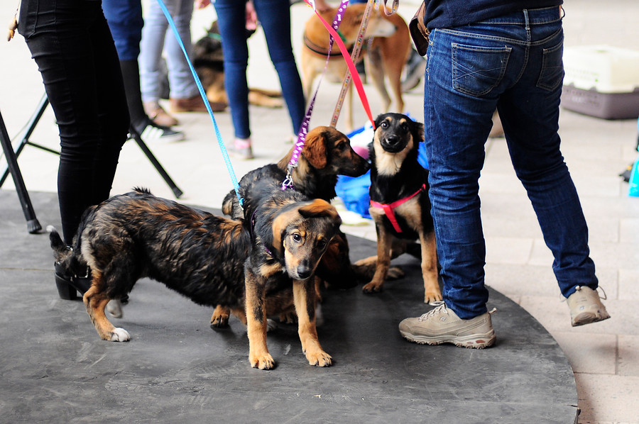
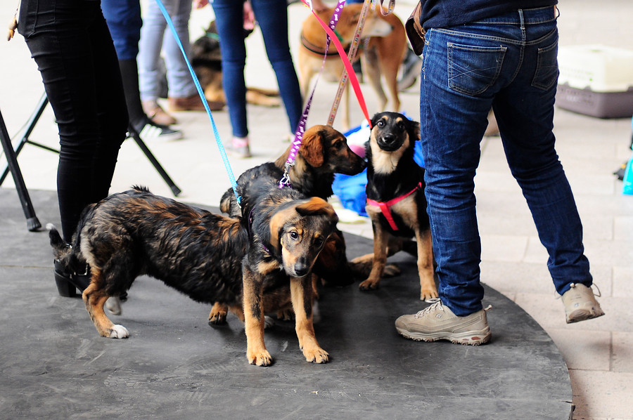

Sobre nosotros
En Pawtopia, cada animal merece un hogar lleno de amor
Somos una casa hogar dedicada a rescatar y dar una segunda oportunidad a animales en situación de vulnerabilidad. Trabajamos para encontrar familias amorosas que puedan ofrecerles el cariño y cuidado que tanto merecen.
- Proveemos atención médica y cuidados necesarios
- Ofrecemos seguimiento y apoyo post-adopción
- Promovemos la educación sobre bienestar animal
 

Colaboradores
Comprometidos a brindar amor, cuidado y apoyo de cualquier tipo a cada amigo que cruza nuestra puerta.

Chat GPT
Redactor WebTecnolochicas
Mentor de Desarrollo
Visual Studio Code
Herramienta de Desarrollo
Discord
Gestor de ComunicaciónITSLP
CapacitadorServicios
Atención Veterinaria Integral
Proporcionamos exámenes médicos completos, vacunas, desparasitaciones y esterilizaciones para asegurar que cada mascota esté en óptimas condiciones de salud antes de ser adoptada.
Spa y Servicios de Belleza
Ofrecemos tratamientos de spa exclusivos para mascotas, incluyendo baños relajantes, cortes de pelaje personalizados y masajes para mantener a tu amigo peludo en su mejor estado.
Centro de Nutrición Gourmet
Brindamos alimentos y suplementos de alta gama, adaptados a las necesidades específicas de cada mascota, con asesoramiento experto para una dieta equilibrada y saludable.
Asesoría en Comportamiento Animal
Contamos con especialistas en comportamiento que ofrecen consultas y programas personalizados para abordar problemas de conducta y fomentar una convivencia armoniosa.
Área de Socialización y Entrenamiento
Proporcionamos espacios y programas para que las mascotas socialicen con otras y reciban entrenamiento básico, ayudando a su adaptación y desarrollo de habilidades.
Consultoría en Diseño de Espacios para Mascotas
Asesoramos en el diseño de áreas dedicadas a mascotas en tu hogar, creando espacios funcionales y elegantes que mejoren la calidad de vida de tu compañero y se adapten a sus necesidades específicas.
Testimonios
“Trabajar en la casa hogar de animales ha sido una experiencia profundamente gratificante. Ver cómo cada animal recibe amor y cuidado es lo que me motiva a seguir apoyando esta causa.”

Voluntario
“Adoptar a mi perro de esta casa hogar fue una de las mejores decisiones de mi vida. El equipo fue increíblemente atento y me ayudó a encontrar al compañero perfecto para mi familia.”

Adoptante
“Hacer una donación a esta casa hogar me da una gran satisfacción, sabiendo que mi contribución ayuda a brindar un mejor futuro a tantos animales necesitados.”

Donante
“Mi visita a la casa hogar de animales fue conmovedora. Los cuidadores hacen un trabajo excepcional y se nota el amor y la dedicación que tienen por cada animal.”
Visitante
Filiales
Atlas
- Horario de atención de 9:00 AM a 6:00 PM
- Área de asesoría personalizada
- Atención veterinaria a domicilio
- Centro de nutrición gourmet
- Spa y servicios de belleza para mascotas externas
Orion
- Horario de atención de 8:00 AM a 10:00 PM
- Área de asesoría personalizada
- Atención veterinaria a domicilio
- Centro de nutrición gourmet
- Spa y servicios de belleza para mascotas externas
Zenith
- Horario de atención de 7:00 AM a 3:00 PM
- Área de asesoría personalizada
- Atención veterinaria a domicilio
- Centro de nutrición gourmet
- Spa y servicios de belleza para mascotas externas
Preguntas Frecuentes
¿Cómo puedo adoptar una mascota?
Para adoptar una mascota, primero debes completar una solicitud de adopción en nuestro sitio web o en nuestro centro. Luego, realizaremos una entrevista y una evaluación para asegurarnos de que la mascota se ajuste a tu hogar y estilo de vida. Después de aprobarse, puedes conocer a las mascotas disponibles y elegir la que mejor se adapte a ti.
¿Cuáles son los requisitos para adoptar una mascota?
Los requisitos pueden variar, pero generalmente necesitamos que tengas un hogar adecuado, tiempo para cuidar de la mascota, y recursos para proveerle alimentación y atención médica. También podemos requerir referencias y realizar una visita al hogar.
¿Qué tipo de atención médica reciben las mascotas antes de ser adoptadas?
Antes de ser adoptadas, todas las mascotas reciben atención veterinaria básica, que incluye vacunas, desparasitaciones y, en muchos casos, esterilización. También les proporcionamos un examen general de salud.
¿Qué hago si tengo problemas con mi nueva mascota después de la adopción?
Ofrecemos soporte post-adopción para ayudarte con cualquier problema que surja. Puedes contactarnos para recibir asesoramiento sobre comportamiento, salud o cualquier otra inquietud relacionada con tu mascota.
¿Puedo devolver una mascota si no se adapta bien a mi hogar?
Sí, aceptamos devoluciones si la mascota no se adapta a tu hogar. Es importante que nos informes lo antes posible para que podamos buscar una solución adecuada y ayudar a la mascota a encontrar un nuevo hogar.
¿Qué debo llevar conmigo cuando voy a adoptar?
Generalmente, solo necesitas llevar una identificación válida y, si es posible, una prueba de domicilio. Te recomendamos también llevar una lista de preguntas que puedas tener sobre la mascota.
¿Cómo seleccionan las mascotas para adopción?
Seleccionamos las mascotas para adopción en función de su salud, comportamiento y compatibilidad con diferentes tipos de hogares. Trabajamos para asegurar que cada mascota esté lista para un nuevo hogar y se adapte bien a su nuevo entorno.
¿Qué tipo de apoyo ofrecen durante el proceso de adopción?
Durante el proceso de adopción, ofrecemos asesoramiento personalizado para ayudarte a elegir la mascota adecuada, además de orientación sobre cuidados y preparación para la llegada de tu nuevo amigo. También brindamos recursos y apoyo continuo para asegurar una transición exitosa.
Blog
Cómo Elegir la Mascota Perfecta para tu Hogar
Elegir una mascota es una decisión importante que debe tomarse con cuidado. En este blog, exploramos los factores clave a considerar al seleccionar la mascota adecuada para tu hogar, desde el tamaño y la raza hasta el nivel de actividad y las necesidades específicas.

Voluntariado en Casas Hogar de Animales: Tu Impacto Real
Voluntariarse en una casa hogar de animales no solo beneficia a los animales, sino que también enriquece tu vida. Descubre cómo puedes hacer una diferencia significativa en la vida de los animales y cómo tu tiempo y esfuerzo pueden tener un impacto real.
Beneficios de Adoptar un Animal de una Casa Hogar
Adoptar un animal de una casa hogar es una decisión que cambia vidas. En este blog, discutimos los beneficios de la adopción, tanto para los animales como para los adoptantes, y por qué elegir adoptar puede ser una de las mejores decisiones que tomes.